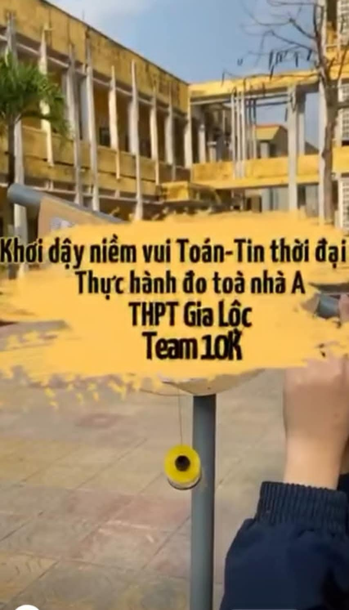
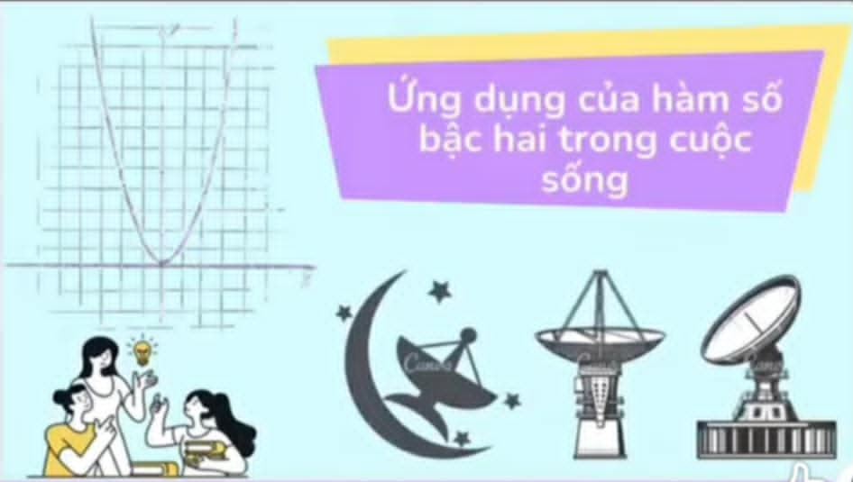

Sáng tạo
Đột phá
Thành công
***Đối tượng***
- Học sinh lớp 10, 11, và 12 của THPT Gia Lộc có đam mê với các môn Toán và Tin học.
- Những bạn có mong muốn phát triển tư duy logic, sáng tạo và thích thử thách bản thân qua các hoạt động nghiên cứu, thi đấu học thuật.
***Mục tiêu***
Nâng cao kiến thức chuyên sâu
Trang bị cho học sinh kiến thức nền tảng vững chắc và các kỹ năng chuyên môn trong lĩnh vực Toán học và Tin học.
Phát triển tư duy sáng tạo
Khuyến khích các em khám phá, nghiên cứu và ứng dụng sáng tạo kiến thức vào giải quyết các bài toán phức tạp và các vấn đề thực tiễn.
Rèn luyện kỹ năng làm việc nhóm
Xây dựng môi trường học tập thân thiện, hỗ trợ lẫn nhau và phát triển kỹ năng giao tiếp, hợp tác trong nhóm.
Chuẩn bị cho tương lai
Hướng dẫn và định hướng nghề nghiệp cho học sinh có đam mê, giúp các em tự tin bước vào các kỳ thi cấp cao và con đường học vấn, nghiên cứu sau này.
***Một số hoạt động***

